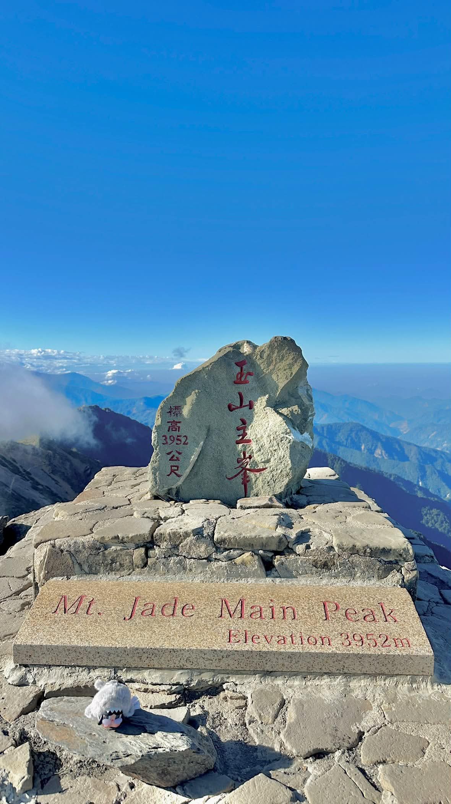

高級挑戰
玉山主峰｜站上台灣最高峰

玉山主峰海拔 3,952 公尺， 是台灣最高峰，也是東北亞著名的高山之一。 沿途可欣賞高山森林、碎石坡與壯麗山稜。 登頂時能俯瞰層層山巒， 感受台灣高山地形的雄偉景觀。
登山路線資訊
- 地點：南投縣信義鄉與嘉義縣阿里山鄉交界
- 海拔：3,952 公尺
- 分類：台灣百岳、台灣最高峰
- 難度：高級挑戰
- 常見路線：塔塔加登山口－排雲山莊－玉山主峰
- 建議行程：兩天一夜，依體能與許可安排
- 路線特色：高山森林、碎石坡、高海拔稜線
排雲山莊與入園申請
玉山主峰常見的兩天一夜行程， 第一天由塔塔加登山口前往排雲山莊住宿， 第二天清晨登頂後循原路下山。 入園及住宿須依玉山國家公園最新規定辦理， 並事先確認申請結果與路線開放狀態。
官方資訊： 玉山國家公園
登山裝備建議
建議準備登山背包、抓地力良好的登山鞋、 保暖中層、防風防雨外套、頭燈、 飲水、行動糧、急救用品與離線地圖。 高山氣溫低且風勢可能強勁， 應依季節與天候準備適當裝備。
高山症與安全注意事項
玉山主峰海拔接近四千公尺， 登山者可能出現頭痛、噁心、頭暈、 疲倦等急性高山症症狀。 應安排適當的高度適應， 避免快速上升及勉強登頂。 若症狀惡化，應停止上升並儘速下降， 必要時尋求緊急救援。
出發前應確認天氣、路況、入園許可， 並預留足夠的撤退時間。 冬季或積雪期間可能需要額外的雪地裝備與技術。